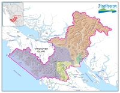

Property
Property Info lookup
SRD = Strathcona Regional District
GIS = Geographic Information System

The geography of the Strathcona Regional District is diverse: from forested hills, remote inlets, picturesque villages to vibrant urban landscapes.
The borders extend from the Oyster River in the south to Gold River, Sayward, Tahsis, Zeballos and Kyuquot-Nootka in the north and west, and east to Cortes Island, Quadra Island and the Discovery Islands as well as a portion of the adjacent mainland north of Powell River.
Click on the map for an interactive look at the SRD.
Use the following resources to explore and discover geo-content.
If you don't find what you're looking for, shoot us an email and we'll see about adding it in.
Property Info lookup
Explore green nature space
Explore SRDGIS projects
Infrastructure & Services
GIS products for member municipalities
Explore pre-made maps